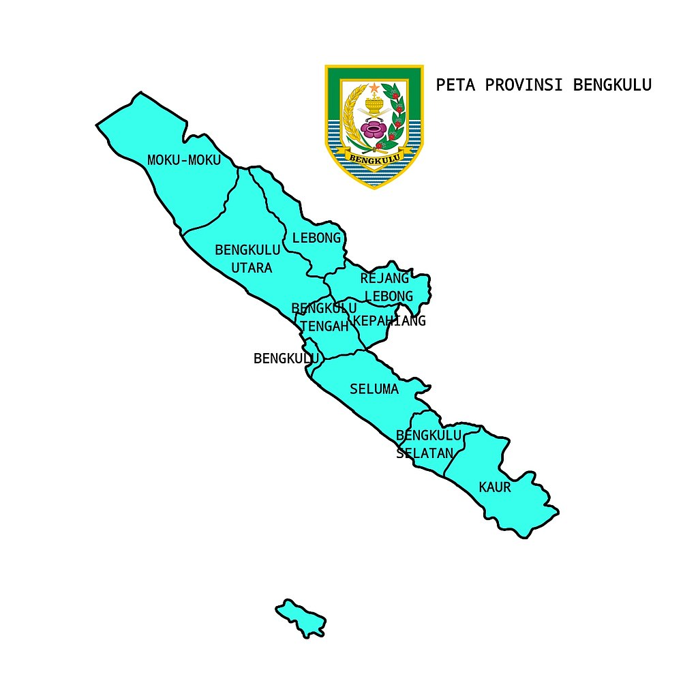

Sejarah
Provinsi Bengkulu terletak di Pulau Sumatera, Indonesia. Sebelumnya, Bengkulu merupakan bagian dari Kesultanan Banten dan merupakan pusat perdagangan yang penting. Pada masa kolonial, Bengkulu dikuasai oleh Belanda dan menjadi salah satu wilayah Hindia Belanda. Setelah kemerdekaan Indonesia, Bengkulu menjadi salah satu provinsi di Indonesia.
Pelajari lebih lanjut tentang Bengkulu di WikipediaGeografi
Bukit Kaba adalah sebuah bukit yang terletak di Provinsi Bengkulu, Indonesia. Bukit ini merupakan salah satu objek wisata alam yang terkenal di daerah tersebut. Letaknya berada di Desa Sumber Sari, Kecamatan Kepahiang, Kabupaten Bengkulu Utara, sekitar 84 km dari Kota Bengkulu.
| Jenis Wilayah | Jumlah |
|---|---|
| Kabupaten | 9 |
| Kecamatan | 97 |
| Kelurahan | 237 |
Budaya
Budaya di Provinsi Bengkulu dipengaruhi oleh berbagai suku dan tradisi yang beragam. Salah satu tradisi yang terkenal adalah tradisi tari-tarian seperti Tari Pasambahan dan Tari Serampang 12. Selain itu, makanan khas Bengkulu seperti Rendang Bengkulu dan Kembung Bakar juga merupakan bagian penting dari budaya kuliner daerah ini.
Makanan Khas Bengkulu
- Rendang Bengkulu
- Kembung Bakar
- Sate Padang
Kontak
Untuk informasi lebih lanjut, silakan hubungi kami: